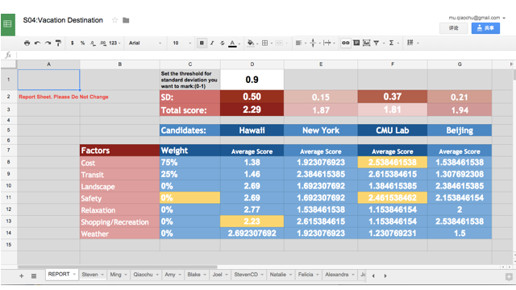
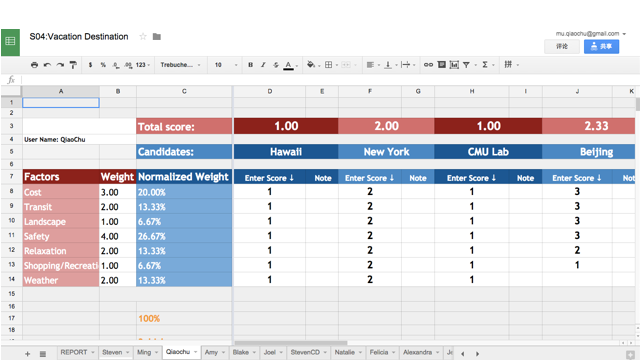
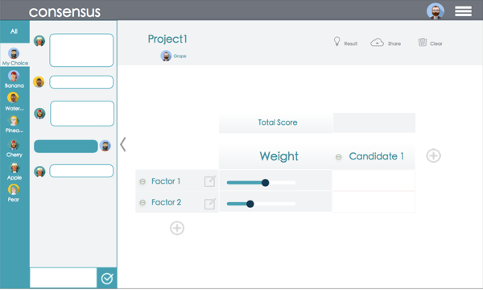
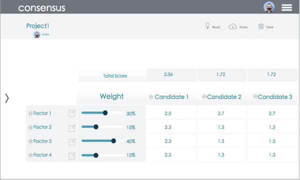
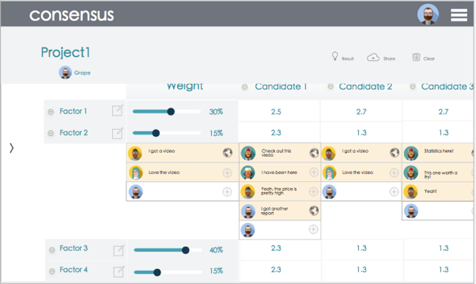
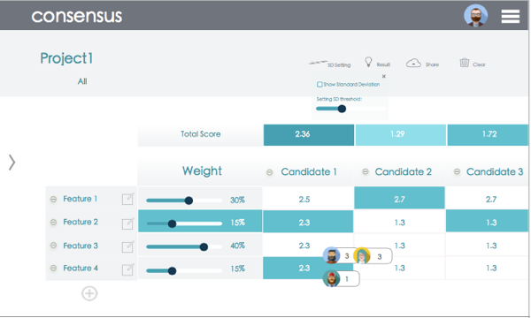

prototyping
It’s not an easy thing to reach a consensus among a group of people, such as, to decide where to live in a new city for our whole family, or, to choose a destination for Chrismas holiday.
So we try to solve this problem by construction a decision matrix.
The first prototyping version was created by Google Sheet. Every participant can evaluate different mensions for the decision. They can also set the weight for each factor. The result page will show the average of the score, so as to help the group to make a decision.

Report PageEvaluation Page
design

(1)(2)

(3)(4)
1The group discuss different options and factors that affect their decisions through the chatroom on the left. Options and factors can be changed at any time. The chatroom will also be available throughout the process.
2Every participant can weigh the factors according to their own preferences. They can then give a score for each factor in the evaluation matrix for each option. The total score for each option is calculated automatically.
3During the evaluation, participants can comment below each cell. The comments can provide supplementary information to help the participants score and give participants a chance to voice their personal opinions.
4The report page will display the final rankings and scores. The darker colors indicate higher rankings. The cells will also be colored if a factor contains a higher score difference. Participants can then use these information to further discuss and reach a consensus.